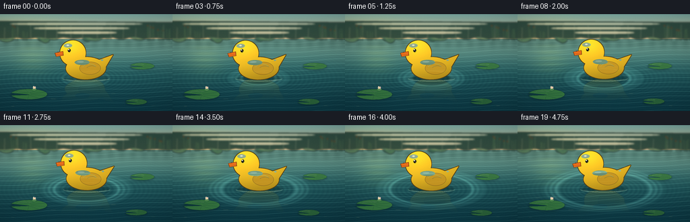
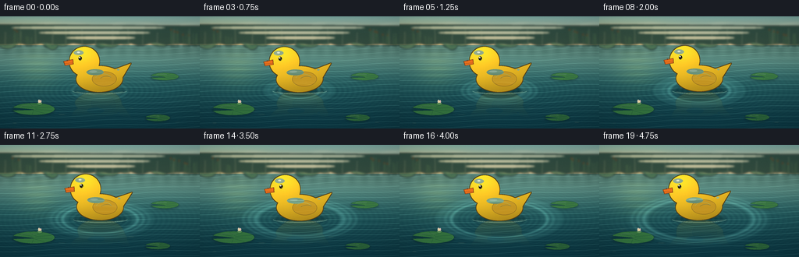
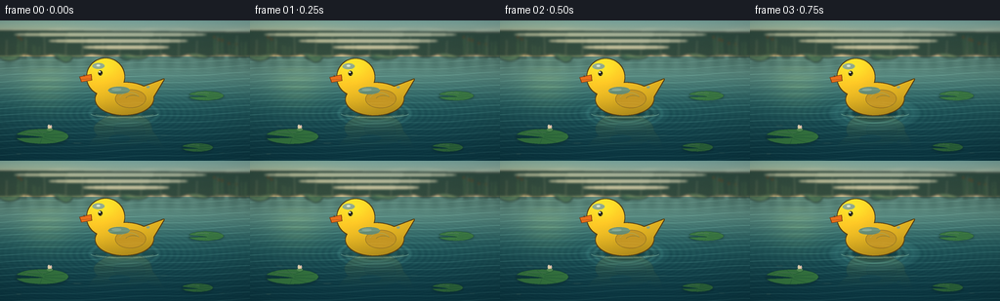

CODING AGENTS AS PIXEL WORLD MODELS
traex/DeepSeek-V4.1-Flash · mechanics_0011
点击播放 · 原生 RGB 像素
逐轮保存的候选
回放视频、检查图与代码变化。
每份候选均可单独播放。实际图片检查记录在下方工具轨迹中。
候选 01播放与检查图
点击播放 · 原生 RGB 像素

展开代码变化
--- 上一保存版本
+++ 本次保存版本
@@ -0,0 +1,460 @@
+"""Procedural rendering of a plastic toy duck floating on a pond."""
+
+from __future__ import annotations
+
+import math
+from pathlib import Path
+
+import numpy as np
+from PIL import Image, ImageDraw, ImageFilter
+
+import artifact_io
+
+
+WIDTH = 256
+HEIGHT = 144
+FRAMES = 20
+FPS = 4.0
+SS = 4
+CW, CH = WIDTH * SS, HEIGHT * SS
+HORIZON = 37.0
+WATERLINE = 95.0
+
+
+def mix(a, b, t):
+ return a + (b - a) * t
+
+
+def smoothstep(edge0, edge1, x):
+ t = np.clip((x - edge0) / (edge1 - edge0), 0.0, 1.0)
+ return t * t * (3.0 - 2.0 * t)
+
+
+def pond_background(t: float) -> Image.Image:
+ """Render the sky and animated water surface at supersampled resolution."""
+ yy, xx = np.mgrid[0:CH, 0:CW].astype(np.float32)
+ x = xx / SS
+ y = yy / SS
+
+ # Soft, slightly hazy morning sky.
+ sky_t = np.clip(y / HORIZON, 0.0, 1.0)
+ sky_top = np.array([119.0, 164.0, 158.0], dtype=np.float32)
+ sky_low = np.array([218.0, 201.0, 154.0], dtype=np.float32)
+ sky = sky_top[None, None, :] * (1.0 - sky_t[..., None]) + sky_low[None, None, :] * sky_t[..., None]
+
+ # Warm light from the upper-left keeps the scene from reading as one teal hue.
+ warm_glow = np.exp(-(((x - 28.0) / 73.0) ** 2) - (((y - 28.0) / 30.0) ** 2))
+ sky += warm_glow[..., None] * np.array([33.0, 23.0, 3.0], dtype=np.float32)
+
+ # Water palette changes with distance; the foreground is darker and cooler.
+ depth = np.clip((y - HORIZON) / (HEIGHT - HORIZON), 0.0, 1.0)
+ top_water = np.array([101.0, 146.0, 134.0], dtype=np.float32)
+ mid_water = np.array([44.0, 105.0, 105.0], dtype=np.float32)
+ near_water = np.array([11.0, 55.0, 66.0], dtype=np.float32)
+ near_t = smoothstep(0.12, 1.0, depth)
+ mid_t = smoothstep(0.0, 0.58, depth)
+ water = top_water[None, None, :] * (1.0 - mid_t[..., None]) + mid_water[None, None, :] * mid_t[..., None]
+ water = water * (1.0 - near_t[..., None]) + near_water[None, None, :] * near_t[..., None]
+
+ # Distant bank reflection, broken into soft horizontal streaks.
+ bank_band = np.exp(-(((y - 43.0) / 8.5) ** 2))
+ bank_streak = 0.55 + 0.45 * np.sin(0.19 * x + 0.65 * t) ** 2
+ bank_alpha = bank_band * bank_streak * 0.30
+ water = water * (1.0 - bank_alpha[..., None]) + np.array([34.0, 69.0, 63.0]) * bank_alpha[..., None]
+
+ # Broad water swells, compressed by distance.
+ phase_a = 0.92 * y + 0.035 * x + 0.75 * np.sin(0.055 * x + 1.20 * t) + 0.34 * t
+ phase_b = 2.10 * y - 0.045 * x + 0.40 * np.sin(0.085 * x - 1.45 * t) - 1.10 * t
+ swell_a = np.maximum(np.sin(phase_a), 0.0) ** 18
+ swell_b = np.maximum(np.sin(phase_b), 0.0) ** 24
+ distance_fade = np.exp(-((y - 91.0) / 71.0) ** 2)
+ water += (swell_a * 34.0 + swell_b * 20.0)[..., None] * distance_fade[..., None] * np.array(
+ [0.72, 0.94, 0.84], dtype=np.float32
+ )
+
+ # Concentric ripples radiate from the floating toy. Their elliptical shape
+ # follows the camera's low angle across the pond.
+ cx, cy = 127.0 + 1.2 * math.sin(0.52 * t + 0.2), 95.5
+ radial = np.sqrt(((x - cx) / 1.55) ** 2 + ((y - cy) / 0.58) ** 2)
+ continuous_ripple = np.sin(radial * 1.46 - t * 4.7) * np.exp(-radial / 50.0)
+ water += continuous_ripple[..., None] * np.array([4.5, 8.0, 6.0], dtype=np.float32)
+
+ ring_light = np.zeros_like(x, dtype=np.float32)
+ for k in range(3):
+ radius = 11.0 + (t + k * 0.72) * 7.2
+ envelope = np.exp(-((radial - radius) / 2.15) ** 2)
+ ring_light += envelope * math.exp(-k * 0.48)
+ water += (ring_light * 42.0)[..., None] * np.array([0.68, 1.0, 0.88], dtype=np.float32)
+
+ # A broken warm reflection under the light source.
+ sun_streak = np.exp(-(((x - 48.0) / 26.0) ** 2) - (((y - 66.0) / 24.0) ** 2))
+ sun_streak *= 0.55 + 0.45 * np.sin(0.34 * y + 0.65 * t) ** 2
+ water += sun_streak[..., None] * np.array([27.0, 23.0, 5.0], dtype=np.float32)
+
+ out = np.where((y >= HORIZON)[..., None], water, sky)
+ out = np.clip(out, 0.0, 255.0).astype(np.uint8)
+ return Image.fromarray(out, "RGB")
+
+
+def draw_background_details(t: float) -> Image.Image:
+ """Draw a blurred, layered reed bank and a few foreground stems."""
+ layer = Image.new("RGBA", (CW, CH), (0, 0, 0, 0))
+ draw = ImageDraw.Draw(layer, "RGBA")
+ rng = np.random.default_rng(117)
+
+ # Far treeline: overlapping soft crowns, then a darker irregular shoreline.
+ crown_colors = [
+ (43, 80, 67, 205),
+ (55, 94, 73, 220),
+ (73, 111, 76, 205),
+ (91, 125, 83, 185),
+ ]
+ for i in range(34):
+ x = -12 + i * 8.2 + rng.uniform(-3.0, 3.0)
+ cy = 27.5 + 4.0 * math.sin(i * 0.77) + rng.uniform(-2.0, 2.0)
+ rx = rng.uniform(7.5, 14.0)
+ ry = rng.uniform(5.0, 10.5)
+ color = crown_colors[i % len(crown_colors)]
+ draw.ellipse(
+ [(x - rx) * SS, (cy - ry) * SS, (x + rx) * SS, (cy + ry) * SS],
+ fill=color,
+ )
+
+ bank_points = [(-4.0, HORIZON + 2.0)]
+ for i in range(37):
+ x = -4.0 + i * 7.5
+ y = 36.0 + 1.25 * math.sin(i * 1.35) + rng.uniform(-0.7, 0.7)
+ bank_points.append((x * SS, y * SS))
+ bank_points.extend([((WIDTH + 4.0) * SS, (HORIZON + 4.0) * SS), ((WIDTH + 4.0) * SS, 12 * SS)])
+ draw.polygon(bank_points, fill=(30, 60, 51, 225))
+
+ # Small trunks give the distant bank vertical structure.
+ for i in range(13):
+ x = 7.0 + i * 19.5 + rng.uniform(-3.0, 3.0)
+ top = 17.0 + rng.uniform(-3.0, 5.0)
+ draw.line(
+ [(x * SS, top * SS), ((x + rng.uniform(-1.0, 1.0)) * SS, 38.0 * SS)],
+ fill=(39, 66, 54, 165),
+ width=max(1, int(0.85 * SS)),
+ )
+
+ # Sparse reeds, placed away from the toy.
+ reed_groups = [
+ (18.0, 4, 0.8),
+ (35.0, 3, 0.6),
+ (219.0, 5, 1.0),
+ (236.0, 4, 0.75),
+ (248.0, 3, 0.65),
+ ]
+ for base_x, count, scale in reed_groups:
+ for j in range(count):
+ x0 = base_x + j * 2.4 + rng.uniform(-0.8, 0.8)
+ h = (15.0 + rng.uniform(0.0, 12.0)) * scale
+ sway = 1.3 * math.sin(t * 1.1 + j * 1.8 + base_x * 0.1)
+ x1 = x0 + sway
+ top = 37.0 - h
+ draw.line(
+ [(x0 * SS, 39.0 * SS), (x1 * SS, top * SS)],
+ fill=(48, 86, 58, 220),
+ width=max(1, int(0.75 * SS)),
+ )
+ if j % 2 == 0 and scale > 0.65:
+ draw.ellipse(
+ [(x1 - 1.0) * SS, (top - 2.5) * SS, (x1 + 1.0) * SS, (top + 0.2) * SS],
+ fill=(83, 61, 35, 235),
+ )
+
+ # Very subtle haze bands over the sky.
+ for i in range(4):
+ y = 8.0 + i * 6.5
+ draw.ellipse(
+ [(-20 + i * 35) * SS, (y - 1.2) * SS, (230 - i * 19) * SS, (y + 1.2) * SS],
+ fill=(237, 222, 184, 16),
+ )
+
+ return layer.filter(ImageFilter.GaussianBlur(1.15 * SS))
+
+
+def make_duck_sprite() -> Image.Image:
+ """Build a glossy side-profile rubber duck at supersampled resolution."""
+ sw, sh = 96, 76
+ width, height = sw * SS, sh * SS
+
+ mask = Image.new("L", (width, height), 0)
+ md = ImageDraw.Draw(mask)
+ md.polygon(
+ [(65.5 * SS, 33.0 * SS), (88.0 * SS, 25.0 * SS), (75.0 * SS, 46.0 * SS)],
+ fill=255,
+ )
+ md.ellipse([18.0 * SS, 28.0 * SS, 77.0 * SS, 61.0 * SS], fill=255)
+ md.ellipse([9.5 * SS, 3.0 * SS, 47.5 * SS, 40.5 * SS], fill=255)
+
+ # Dark molded edge around the whole silhouette.
+ dilated = mask.filter(ImageFilter.MaxFilter(7))
+ outline_alpha = np.asarray(dilated, dtype=np.uint8).copy()
+ outline_alpha[np.asarray(mask) > 0] = 0
+ outline = Image.new("RGBA", (width, height), (0, 0, 0, 0))
+ outline.putalpha(Image.fromarray(outline_alpha))
+ outline_pixels = np.zeros((height, width, 4), dtype=np.uint8)
+ outline_pixels[..., :3] = np.array([82, 60, 22], dtype=np.uint8)
+ outline_pixels[..., 3] = outline_alpha
+ outline = Image.fromarray(outline_pixels, "RGBA")
+
+ # Plastic fill with a smooth top-left to lower-right light falloff.
+ yy, xx = np.mgrid[0:height, 0:width].astype(np.float32)
+ x = xx / SS
+ y = yy / SS
+ u = np.clip((x - 9.0) / 80.0, 0.0, 1.0)
+ v = np.clip((y - 2.0) / 61.0, 0.0, 1.0)
+ shade = 0.79 + 0.27 * (1.0 - v) + 0.08 * (1.0 - u) - 0.055 * u
+ shade += 0.10 * np.exp(-(((x - 27.0) / 15.0) ** 2) - (((y - 13.0) / 12.0) ** 2))
+ shade -= 0.10 * smoothstep(0.55, 1.0, v)
+ fill = np.zeros((height, width, 4), dtype=np.uint8)
+ fill[..., 0] = np.clip(252.0 * shade, 0.0, 255.0).astype(np.uint8)
+ fill[..., 1] = np.clip(199.0 * shade, 0.0, 255.0).astype(np.uint8)
+ fill[..., 2] = np.clip(35.0 * shade + 3.0, 0.0, 255.0).astype(np.uint8)
+ fill[..., 3] = np.asarray(mask, dtype=np.uint8)
+ duck = Image.alpha_composite(outline, Image.fromarray(fill, "RGBA"))
+ d = ImageDraw.Draw(duck, "RGBA")
+
+ # Molded wing, with a soft amber edge and a narrow inner crease.
+ wing_box = [38.0 * SS, 35.0 * SS, 69.5 * SS, 54.0 * SS]
+ d.ellipse(wing_box, fill=(224, 159, 22, 215), outline=(167, 105, 13, 190), width=max(1, SS // 2))
+ d.arc(
+ [42.0 * SS, 38.0 * SS, 63.0 * SS, 52.0 * SS],
+ start=200,
+ end=335,
+ fill=(255, 225, 92, 145),
+ width=max(1, SS // 2),
+ )
+ d.arc(
+ [48.0 * SS, 41.0 * SS, 65.0 * SS, 50.5 * SS],
+ start=205,
+ end=315,
+ fill=(190, 121, 14, 130),
+ width=max(1, SS // 2),
+ )
+
+ # Orange beak, upper/lower halves and a small nostril.
+ d.polygon(
+ [(14.0 * SS, 18.8 * SS), (1.5 * SS, 21.4 * SS), (3.5 * SS, 27.0 * SS), (14.5 * SS, 25.4 * SS)],
+ fill=(238, 112, 27, 255),
+ outline=(128, 57, 17, 255),
+ width=max(1, int(0.9 * SS)),
+ )
+ d.line(
+ [(2.5 * SS, 24.2 * SS), (14.0 * SS, 23.5 * SS)],
+ fill=(130, 58, 17, 210),
+ width=max(1, int(0.65 * SS)),
+ )
+ d.ellipse([5.8 * SS, 19.6 * SS, 7.3 * SS, 21.0 * SS], fill=(121, 48, 12, 205))
+
+ # Eye and glints make the toy read instantly at video scale.
+ d.ellipse([21.1 * SS, 15.4 * SS, 25.3 * SS, 20.4 * SS], fill=(28, 26, 20, 255))
+ d.ellipse([21.7 * SS, 15.9 * SS, 23.5 * SS, 17.6 * SS], fill=(255, 249, 219, 235))
+ d.ellipse([23.9 * SS, 18.7 * SS, 24.8 * SS, 19.6 * SS], fill=(114, 76, 22, 170))
+
+ # Broad satin highlights on the head and shoulder.
+ d.ellipse([15.0 * SS, 7.5 * SS, 27.5 * SS, 13.7 * SS], fill=(255, 246, 185, 92))
+ d.ellipse([19.4 * SS, 9.0 * SS, 23.1 * SS, 11.0 * SS], fill=(255, 255, 231, 205))
+ d.ellipse([31.0 * SS, 32.0 * SS, 53.0 * SS, 39.5 * SS], fill=(255, 238, 143, 60))
+ d.ellipse([34.5 * SS, 33.5 * SS, 44.5 * SS, 36.0 * SS], fill=(255, 250, 205, 95))
+ d.ellipse([70.0 * SS, 31.5 * SS, 73.5 * SS, 34.0 * SS], fill=(255, 242, 154, 100))
+
+ return duck
+
+
+def draw_lily_pad(
+ image: Image.Image,
+ cx: float,
+ cy: float,
+ rx: float,
+ ry: float,
+ angle: float,
+ tone: tuple[int, int, int],
+) -> None:
+ pad = Image.new("RGBA", (CW, CH), (0, 0, 0, 0))
+ draw = ImageDraw.Draw(pad, "RGBA")
+
+ # A shallow ellipse with a V notch, outlined by a darker wet rim.
+ points = []
+ notch = 24.0
+ for i in range(49):
+ theta = math.radians(-165.0 + i * (330.0 / 48.0))
+ px = cx + rx * math.cos(theta)
+ py = cy + ry * math.sin(theta)
+ points.append((px * SS, py * SS))
+ points.extend([((cx + 1.0) * SS, (cy + 1.2) * SS), ((cx - 2.0) * SS, (cy + 0.4) * SS)])
+ draw.polygon(points, fill=(*tone, 238), outline=(18, 65, 45, 245))
+
+ # Radial veins and a restrained top-left sheen.
+ for i in range(7):
+ theta = math.radians(-140.0 + i * 39.0)
+ x1 = cx + 2.5 * math.cos(theta)
+ y1 = cy + 2.5 * math.sin(theta)
+ x2 = cx + (rx - 1.8) * math.cos(theta)
+ y2 = cy + (ry - 0.7) * math.sin(theta)
+ draw.line(
+ [(x1 * SS, y1 * SS), (x2 * SS, y2 * SS)],
+ fill=(tone[0] - 21, tone[1] - 28, tone[2] - 18, 125),
+ width=max(1, SS // 3),
+ )
+ draw.arc(
+ [(cx - rx * 0.65) * SS, (cy - ry * 0.65) * SS, (cx + rx * 0.25) * SS, (cy + ry * 0.10) * SS],
+ start=192,
+ end=320,
+ fill=(166, 207, 112, 95),
+ width=max(1, SS // 2),
+ )
+ image.alpha_composite(pad)
+
+
+def add_lily_pads(scene: Image.Image, t: float) -> None:
+ # Soft contact shadows first.
+ shadows = Image.new("RGBA", (CW, CH), (0, 0, 0, 0))
+ sd = ImageDraw.Draw(shadows, "RGBA")
+ for cx, cy, rx, ry in [(43.0, 119.0, 27.0, 8.0), (211.0, 77.0, 18.0, 5.0), (202.0, 130.0, 16.0, 4.5)]:
+ sd.ellipse(
+ [(cx - rx) * SS, (cy - ry + 1.2) * SS, (cx + rx) * SS, (cy + ry + 1.2) * SS],
+ fill=(5, 40, 37, 75),
+ )
+ scene.alpha_composite(shadows.filter(ImageFilter.GaussianBlur(1.3 * SS)))
+
+ draw_lily_pad(scene, 43.0, 119.0 + 0.35 * math.sin(t * 1.2), 27.0, 7.7, -12.0, (54, 118, 62))
+ draw_lily_pad(scene, 211.0, 77.0 + 0.28 * math.sin(t * 1.0 + 1.2), 18.0, 4.8, 10.0, (62, 126, 66))
+ draw_lily_pad(scene, 202.0, 130.0 + 0.45 * math.sin(t * 1.3 + 2.0), 16.0, 4.3, -8.0, (46, 103, 57))
+
+ # A small, pale water-lily bud keeps the left pad from becoming a flat shape.
+ flower = Image.new("RGBA", (CW, CH), (0, 0, 0, 0))
+ fd = ImageDraw.Draw(flower, "RGBA")
+ bx, by = 51.0, 111.5 + 0.35 * math.sin(t * 1.2 + 0.3)
+ fd.ellipse([(bx - 2.8) * SS, (by - 1.6) * SS, (bx + 2.8) * SS, (by + 1.8) * SS], fill=(93, 145, 86, 220))
+ fd.ellipse([(bx - 2.1) * SS, (by - 4.8) * SS, (bx + 0.1) * SS, (by - 0.6) * SS], fill=(242, 218, 190, 238))
+ fd.ellipse([(bx + 0.1) * SS, (by - 4.3) * SS, (bx + 2.1) * SS, (by - 0.8) * SS], fill=(232, 190, 188, 238))
+ fd.ellipse([(bx - 1.0) * SS, (by - 3.3) * SS, (bx + 1.0) * SS, (by - 1.1) * SS], fill=(255, 232, 168, 245))
+ scene.alpha_composite(flower)
+
+
+def add_duck(scene: Image.Image, sprite: Image.Image, t: float) -> tuple[float, float, float]:
+ dx = 1.25 * math.sin(0.52 * t + 0.2)
+ dy = 0.62 * math.sin(2.0 * t + 0.4)
+ angle = 1.15 * math.sin(1.42 * t + 0.65)
+ anchor_x = 127.5 + dx
+ anchor_y = 73.5 + dy
+
+ # Contact shadow and a bright meniscus around the toy's footprint.
+ shadow = Image.new("RGBA", (CW, CH), (0, 0, 0, 0))
+ sd = ImageDraw.Draw(shadow, "RGBA")
+ sd.ellipse(
+ [(anchor_x - 34.0) * SS, (WATERLINE - 4.5) * SS, (anchor_x + 34.0) * SS, (WATERLINE + 5.0) * SS],
+ fill=(2, 39, 42, 105),
+ )
+ scene.alpha_composite(shadow.filter(ImageFilter.GaussianBlur(2.0 * SS)))
+
+ meniscus = Image.new("RGBA", (CW, CH), (0, 0, 0, 0))
+ md = ImageDraw.Draw(meniscus, "RGBA")
+ md.arc(
+ [(anchor_x - 35.0) * SS, (WATERLINE - 4.0) * SS, (anchor_x + 35.0) * SS, (WATERLINE + 5.0) * SS],
+ start=6,
+ end=174,
+ fill=(153, 205, 179, 155),
+ width=max(1, int(0.8 * SS)),
+ )
+ md.arc(
+ [(anchor_x - 31.0) * SS, (WATERLINE - 3.0) * SS, (anchor_x + 31.0) * SS, (WATERLINE + 4.0) * SS],
+ start=18,
+ end=162,
+ fill=(231, 233, 178, 95),
+ width=max(1, SS // 2),
+ )
+ scene.alpha_composite(meniscus)
+
+ # The duck reflection is built from the same sprite, then tinted and rippled.
+ flipped = sprite.transpose(Image.Transpose.FLIP_TOP_BOTTOM)
+ arr = np.asarray(flipped, dtype=np.float32).copy()
+ h = arr.shape[0]
+ alpha_bbox = sprite.getchannel("A").getbbox()
+ visible_bottom = alpha_bbox[3] if alpha_bbox else sprite.height
+ body_band_start = sprite.height - visible_bottom
+
+ tint = np.array([29.0, 89.0, 82.0], dtype=np.float32)
+ arr[..., :3] = arr[..., :3] * 0.58 + tint[None, None, :] * 0.42
+ reflection = Image.new("RGBA", (CW, CH), (0, 0, 0, 0))
+ paste_x = int(round((anchor_x - 48.0) * SS))
+ paste_y = int(round(WATERLINE * SS - body_band_start))
+ for row in range(h):
+ if row < body_band_start:
+ continue
+ depth = (row - body_band_start) / max(1.0, 40.0 * SS)
+ if depth >= 1.0:
+ break
+ fade = max(0.0, 1.0 - depth) ** 1.55
+ shift = int(round((1.15 * math.sin(row / (6.0 * SS) + t * 3.1) + 0.45 * math.sin(row / (2.6 * SS) - t * 2.0)) * SS))
+ row_rgba = arr[row : row + 1].copy()
+ row_rgba[..., 3] *= fade * 0.28
+ reflection.paste(Image.fromarray(row_rgba.astype(np.uint8), "RGBA"), (paste_x + shift, paste_y + row))
+ scene.alpha_composite(reflection)
+
+ rotated = sprite.rotate(angle, resample=Image.Resampling.BICUBIC, expand=True)
+ px = int(round(anchor_x * SS - rotated.width / 2.0))
+ py = int(round(anchor_y * SS - rotated.height / 2.0))
+ scene.alpha_composite(rotated, (px, py))
+
+ return anchor_x, dy, angle
+
+
+def add_foreground_finish(scene: Image.Image, t: float, frame_index: int) -> Image.Image:
+ """Add tiny foreground glints and a restrained cinematic grade."""
+ glints = Image.new("RGBA", (CW, CH), (0, 0, 0, 0))
+ gd = ImageDraw.Draw(glints, "RGBA")
+ glint_specs = [
+ (30.0, 108.0, 8.0),
+ (79.0, 126.0, 11.0),
+ (168.0, 118.0, 9.0),
+ (227.0, 136.0, 7.0),
+ (19.0, 137.0, 6.0),
+ ]
+ for i, (x, y, length) in enumerate(glint_specs):
+ phase = 0.5 + 0.5 * math.sin(t * (1.4 + i * 0.13) + i * 1.7)
+ alpha = int(22 + 35 * phase)
+ gd.ellipse(
+ [(x - length / 2.0) * SS, (y - 0.45) * SS, (x + length / 2.0) * SS, (y + 0.45) * SS],
+ fill=(210, 234, 193, alpha),
+ )
+ scene.alpha_composite(glints.filter(ImageFilter.GaussianBlur(0.45 * SS)))
+
+ rgb = np.asarray(scene.convert("RGB"), dtype=np.float32) / 255.0
+ yy, xx = np.mgrid[0:CH, 0:CW].astype(np.float32)
+ nx = (xx / (CW - 1.0)) * 2.0 - 1.0
+ ny = (yy / (CH - 1.0)) * 2.0 - 1.0
+ vignette = np.clip(1.0 - 0.14 * (nx**2 * 0.65 + ny**2 * 0.35), 0.80, 1.0)
+ rgb *= vignette[..., None]
+
+ # Very small amount of stable texture; fixed seed avoids frame-to-frame flicker.
+ grain = np.random.default_rng(901 + frame_index).normal(0.0, 0.0045, (CH, CW, 1)).astype(np.float32)
+ rgb = np.clip(rgb + grain, 0.0, 1.0)
+ return Image.fromarray((rgb * 255.0 + 0.5).astype(np.uint8), "RGB")
+
+
+def render_frame(frame_index: int, sprite: Image.Image) -> np.ndarray:
+ t = frame_index / FPS
+ base = pond_background(t).convert("RGBA")
+ base.alpha_composite(draw_background_details(t))
+
+ add_lily_pads(base, t)
+ add_duck(base, sprite, t)
+ final_hi = add_foreground_finish(base, t, frame_index)
+ final = final_hi.resize((WIDTH, HEIGHT), Image.Resampling.LANCZOS)
+ return np.asarray(final.convert("RGB"), dtype=np.uint8)
+
+
+def main() -> None:
+ case_dir = Path(__file__).resolve().parent
+ sprite = make_duck_sprite()
+ frames = [render_frame(i, sprite) for i in range(FRAMES)]
+ artifact_io.save(frames, case_dir)
+ print(f"Rendered {len(frames)} frames to {case_dir}")
+
+
+if __name__ == "__main__":
+ main()
候选 02播放与检查图
点击播放 · 原生 RGB 像素


展开代码变化
--- 上一保存版本
+++ 本次保存版本
@@ -45,6 +45,14 @@
# Warm light from the upper-left keeps the scene from reading as one teal hue.
warm_glow = np.exp(-(((x - 28.0) / 73.0) ** 2) - (((y - 28.0) / 30.0) ** 2))
sky += warm_glow[..., None] * np.array([33.0, 23.0, 3.0], dtype=np.float32)
+
+ # Long, low cloud wisps drift almost imperceptibly behind the bank.
+ cloud_a = np.exp(-(((y - (10.0 + 1.5 * np.sin(0.065 * x + 0.18 * t))) / 2.2) ** 2))
+ cloud_a *= 0.40 + 0.60 * np.sin(0.072 * x - 0.22 * t + 0.4) ** 2
+ cloud_b = np.exp(-(((y - (20.5 + 1.2 * np.sin(0.052 * x - 0.15 * t + 1.3))) / 2.8) ** 2))
+ cloud_b *= 0.44 + 0.56 * np.sin(0.045 * x + 0.17 * t + 2.1) ** 2
+ cloud_alpha = np.clip((cloud_a + 0.62 * cloud_b) * 0.16, 0.0, 0.18)
+ sky = sky * (1.0 - cloud_alpha[..., None]) + np.array([231.0, 221.0, 192.0]) * cloud_alpha[..., None]
# Water palette changes with distance; the foreground is darker and cooler.
depth = np.clip((y - HORIZON) / (HEIGHT - HORIZON), 0.0, 1.0)
@@ -93,7 +101,7 @@
out = np.where((y >= HORIZON)[..., None], water, sky)
out = np.clip(out, 0.0, 255.0).astype(np.uint8)
- return Image.fromarray(out, "RGB")
+ return Image.fromarray(out)
def draw_background_details(t: float) -> Image.Image:
@@ -198,7 +206,7 @@
outline_pixels = np.zeros((height, width, 4), dtype=np.uint8)
outline_pixels[..., :3] = np.array([82, 60, 22], dtype=np.uint8)
outline_pixels[..., 3] = outline_alpha
- outline = Image.fromarray(outline_pixels, "RGBA")
+ outline = Image.fromarray(outline_pixels)
# Plastic fill with a smooth top-left to lower-right light falloff.
yy, xx = np.mgrid[0:height, 0:width].astype(np.float32)
@@ -214,7 +222,7 @@
fill[..., 1] = np.clip(199.0 * shade, 0.0, 255.0).astype(np.uint8)
fill[..., 2] = np.clip(35.0 * shade + 3.0, 0.0, 255.0).astype(np.uint8)
fill[..., 3] = np.asarray(mask, dtype=np.uint8)
- duck = Image.alpha_composite(outline, Image.fromarray(fill, "RGBA"))
+ duck = Image.alpha_composite(outline, Image.fromarray(fill))
d = ImageDraw.Draw(duck, "RGBA")
# Molded wing, with a soft amber edge and a narrow inner crease.
@@ -392,7 +400,7 @@
shift = int(round((1.15 * math.sin(row / (6.0 * SS) + t * 3.1) + 0.45 * math.sin(row / (2.6 * SS) - t * 2.0)) * SS))
row_rgba = arr[row : row + 1].copy()
row_rgba[..., 3] *= fade * 0.28
- reflection.paste(Image.fromarray(row_rgba.astype(np.uint8), "RGBA"), (paste_x + shift, paste_y + row))
+ reflection.paste(Image.fromarray(row_rgba.astype(np.uint8)), (paste_x + shift, paste_y + row))
scene.alpha_composite(reflection)
rotated = sprite.rotate(angle, resample=Image.Resampling.BICUBIC, expand=True)
@@ -433,7 +441,7 @@
# Very small amount of stable texture; fixed seed avoids frame-to-frame flicker.
grain = np.random.default_rng(901 + frame_index).normal(0.0, 0.0045, (CH, CW, 1)).astype(np.float32)
rgb = np.clip(rgb + grain, 0.0, 1.0)
- return Image.fromarray((rgb * 255.0 + 0.5).astype(np.uint8), "RGB")
+ return Image.fromarray((rgb * 255.0 + 0.5).astype(np.uint8))
def render_frame(frame_index: int, sprite: Image.Image) -> np.ndarray:
可观测工具轨迹
实际执行的命令与返回图片。
命令 1exit 0
/bin/bash -c "pwd && rg --files -g 'prompt.txt' -g 'GENERATION_RULES.md' -g 'task_spec.json' -g '"'!node_modules'"' -g '"'!vendor'"'"
命令 2exit 0
/bin/bash -c 'ls -la'
命令 3exit 0
/bin/bash -c 'cat prompt.txt'
命令 4exit 0
/bin/bash -c 'cat GENERATION_RULES.md'
命令 5exit 0
/bin/bash -c 'cat task_spec.json'
命令 6exit 0
/bin/bash -c "sed -n '1,240p' artifact_io.py && printf '\\n--- template ---\\n' && sed -n '1,220p' player_template.html"
命令 7exit 0
/bin/bash -c 'command -v chafa || true; command -v viu || true; command -v ffmpeg || true; command -v magick || true; command -v convert || true'
命令 8exit 0
/bin/bash -c "python - <<'PY'
import PIL, numpy
print('Pillow', PIL.__version__)
print('numpy', numpy.__version__)
try:
import scipy; print('scipy', scipy.__version__)
except Exception as e: print('no scipy', e)
PY"命令 9exit 0
/bin/bash -c 'python generate.py'
命令 10exit 0
/bin/bash -c 'ls -lh frames pixels.npz inspection.png transition_check.png index.html generate.py'
命令 11exit 0
/bin/bash -c "python - <<'PY'
from PIL import Image
import numpy as np
for p in ['frames/00.png','frames/10.png','frames/19.png']:
a=np.asarray(Image.open(p).convert('RGB'))
print(p, 'mean', a.mean((0,1)).round(1), 'std', a.std((0,1)).round(1), 'dark%', round((a.mean(2)<35).mean()*100,1))
PY"命令 12exit 0
/bin/bash -c "python - <<'PY'
from PIL import Image
import numpy as np
chars=' .:-=+*#%@'
for f in [0,10,19]:
im=Image.open(f'frames/{f:02d}.png').convert('L').resize((80,45))
a=np.asarray(im)
print(f'\\nFRAME {f}')
for row in a:
print(''.join(chars[min(len(chars)-1,int(v)*len(chars)//256)] for v in row))
PY"命令 13exit 0
/bin/bash -c 'for c in viu chafa jp2 sixel img2txt kitty wezterm timg lsix ffplay mpv; do command -v "$c" && echo "$c"; done; python - <<'"'PY' mods=['imageio','imageio_ffmpeg','cv2','matplotlib','moviepy'] for m in mods: try: mod=__import__(m); print(m, getattr(mod,'__version__','available')) except Exception as e: print(m, 'unavailable') PY"
命令 14exit 0
/bin/bash -c "python - <<'PY'
from PIL import Image
import numpy as np
ims=np.stack([np.asarray(Image.open(f'frames/{i:02d}.png').convert('RGB'),dtype=np.int16) for i in range(20)])
d=np.abs(np.diff(ims,axis=0))
print('consecutive mean abs diff', np.round(d.mean((1,2,3)),2))
print('changed pixels (>8 max-channel)', np.round((d.max(3)>8).mean((1,2))*100,1))
# key region bbox of yellow/orange toy, excluding pale highlights
for i in [0,5,10,15,19]:
a=ims[i]
r,g,b=a[...,0],a[...,1],a[...,2]
m=(r>175)&(g>105)&(g<225)&(b<105)&((r-g)>30)
ys,xs=np.nonzero(m)
print(i, 'toy-ish bbox', (xs.min(),ys.min(),xs.max(),ys.max()), 'count', len(xs))
PY"命令 15exit 0
/bin/bash -c "python - <<'PY'
from PIL import Image
im=Image.open('inspection.png')
print(im.size)
# Quantized color palette in key frame for review
from collections import Counter
a=Image.open('frames/00.png').convert('RGB')
c=Counter(a.getdata())
for col,n in c.most_common(20): print(col,n)
PY"命令 16exit 0
/bin/bash -c 'cp frames/00.png .tmp/candidate_01_frame00.png && cp inspection.png .tmp/candidate_01_inspection.png'
命令 17exit 0
/bin/bash -c 'python generate.py'
命令 18exit 0
/bin/bash -c "python - <<'PY'
from PIL import Image
import numpy as np, json
from pathlib import Path
frames=[]
for i in range(20):
im=Image.open(f'frames/{i:02d}.png')
assert im.size==(256,144) and im.mode=='RGB', (i, im.size, im.mode)
a=np.asarray(im)
frames.append(a)
f=np.stack(frames)
assert f.shape==(20,144,256,3) and f.dtype==np.uint8
assert np.isfinite(f).all()
d=np.abs(np.diff(f.astype(np.int16),axis=0))
print('shape',f.shape,'range',(f.min(),f.max()),'unique colors',len(np.unique(f.reshape(-1,3),axis=0)))
print('frame diff mean',round(float(d.mean()),3),'changed>8',round(float((d.max(3)>8).mean()*100),2),'%')
print('per-frame mean luma',np.round(f.mean((1,2,3)),1).tolist())
print('sky drift max abs',int(d[:12].max()))
print('files',[(p.name,p.stat().st_size) for p in [Path('pixels.npz'),Path('index.html'),Path('inspection.png'),Path('transition_check.png')]])
PY"命令 19exit 0
/bin/bash -c "python - <<'PY'
from PIL import Image
import numpy as np
ims=np.stack([np.asarray(Image.open(f'frames/{i:02d}.png').convert('RGB'),dtype=np.int16) for i in range(20)])
d=np.abs(np.diff(ims,axis=0))
for name,sl in [('sky',(slice(None),slice(0,37),slice(None))),('bank',(slice(None),slice(37,58),slice(None))),('water',(slice(None),slice(58,110),slice(None))),('fg',(slice(None),slice(110,144),slice(None)))]:
x=d[(slice(None),)+sl[1:]]
print(name,'mean',round(float(x.mean()),2),'changed>8',round(float((x.max(3)>8).mean()*100),1),'max',int(x.max()))
# show top row means per frame
print('top rows per-frame means')
print(np.round(ims[:,:20].mean((1,2,3)),2).tolist())
PY"命令 20exit 0
/bin/bash -c "cp frames/00.png .tmp/candidate_02_frame00.png && cp inspection.png .tmp/candidate_02_inspection.png && python - <<'PY'
from PIL import Image
# A larger inspection crop centered on the subject for visual validation.
im=Image.open('frames/00.png')
im.crop((55,30,200,135)).resize((580,420), Image.Resampling.NEAREST).save('.tmp/duck_crop.png')
PY"命令 21exit 0
/bin/bash -c "python - <<'PY'
from PIL import Image
import numpy as np
im=np.asarray(Image.open('frames/00.png').convert('RGB'))
# classify coarse colors to inspect layout and subject silhouette
r,g,b=im[...,0].astype(int),im[...,1].astype(int),im[...,2].astype(int)
yellow=(r>150)&(g>95)&(r>g+20)&(b<120)
orange=(r>120)&(r>g*1.35)&(b<90)
dark=(r+g+b<120)
water=(b>g)&(g>r)
sky=(g>=b)&(r>g-10)
for y0 in range(0,144,4):
row=[]
for x0 in range(0,256,4):
cell=(slice(y0,y0+4),slice(x0,x0+4))
counts=[yellow[cell].sum(),orange[cell].sum(),dark[cell].sum(),water[cell].sum(),sky[cell].sum()]
i=int(np.argmax(counts))
row.append('YO#W~'[i])
print(''.join(row))
PY"命令 22exit 0
/bin/bash -c "python - <<'PY'
from PIL import Image
import numpy as np
from pathlib import Path
# Check deterministic output against a temporary second run by importing the renderer.
import importlib.util
spec=importlib.util.spec_from_file_location('gen','generate.py'); mod=importlib.util.module_from_spec(spec); spec.loader.exec_module(mod)
sprite=mod.make_duck_sprite()
checks=[0,9,19]
for i in checks:
a=mod.render_frame(i,sprite)
b=np.asarray(Image.open(f'frames/{i:02d}.png').convert('RGB'))
print(i, 'identical',np.array_equal(a,b),'maxdiff',int(np.abs(a.astype(int)-b.astype(int)).max()))
# Validate the browser payload decodes to exactly the same frames.
import re,base64,json
text=Path('index.html').read_text()
payload=json.loads(re.search(r'const DATA=(\\{.*?\\}),W=',text).group(1))
def unpack(s):
return np.frombuffer(base64.b64decode(s),dtype='<u4').astype(np.uint32)
packed=[unpack(payload['first'])]
for enc in payload['deltas']:
f=packed[-1].copy(); p=unpack(enc); i=0
while i<len(p):
start=int(p[i]); count=int(p[i+1]); i+=2
f[start:start+count]=p[i:i+count]; i+=count
packed.append(f)
assert len(packed)==20 and all(len(p)==256*144 for p in packed)
for i,p in enumerate(packed):
arr=np.stack([(p>>16)&255,(p>>8)&255,p&255],axis=1).reshape(144,256,3).astype(np.uint8)
assert np.array_equal(arr,np.asarray(Image.open(f'frames/{i:02d}.png').convert('RGB')))
print('payload frames verified:',len(packed),'caption:',payload['caption'])
print('required files:', all(Path(p).exists() for p in ['generate.py','frames/00.png','frames/19.png','pixels.npz','inspection.png','transition_check.png','index.html']))
PY"保存候选 2 份；完成命令 22 次；可验证图片返回 0 张。原始 API 响应与完整日志保留在本地。